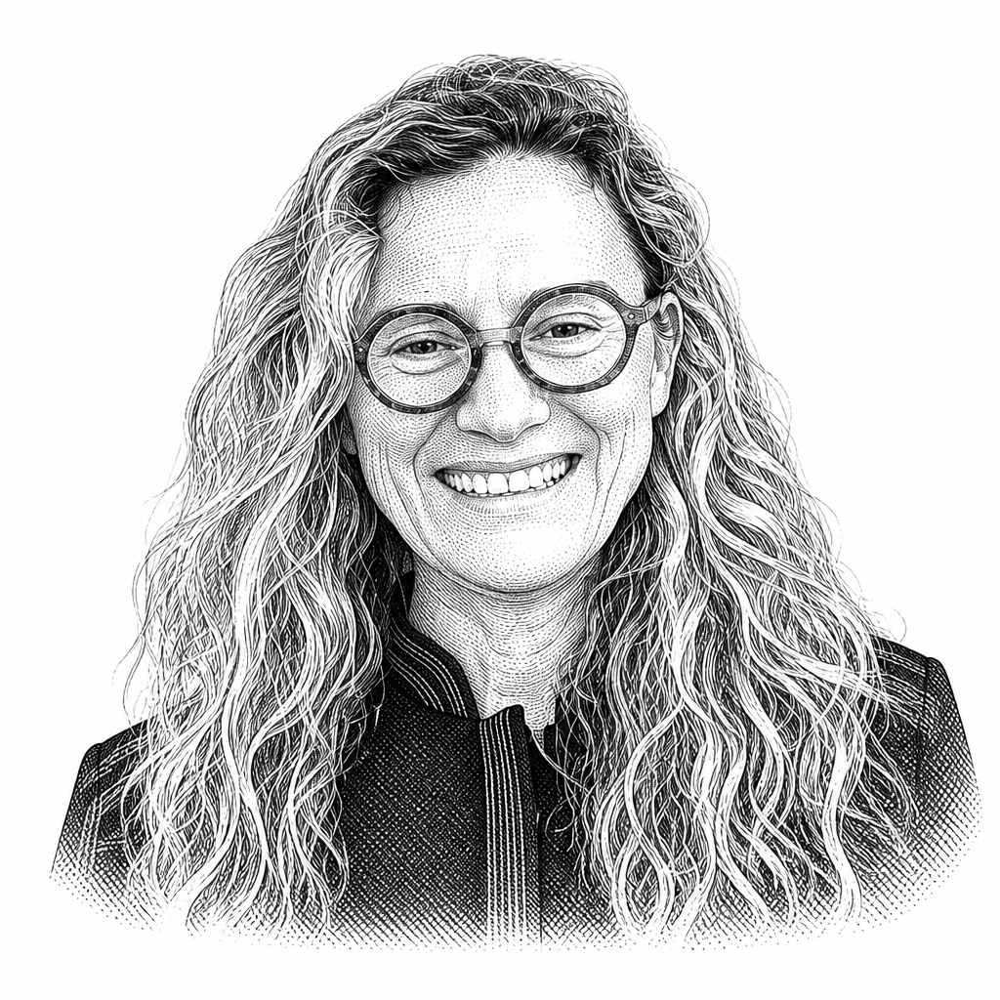
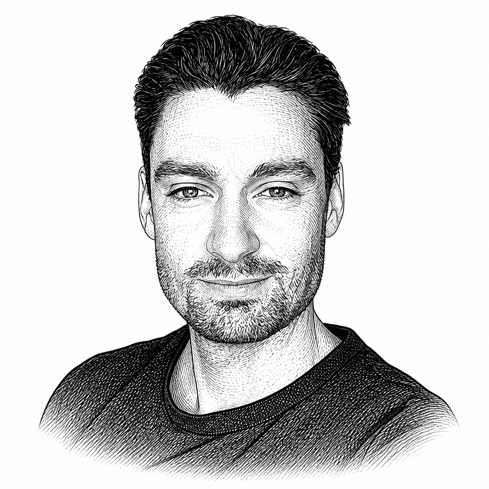
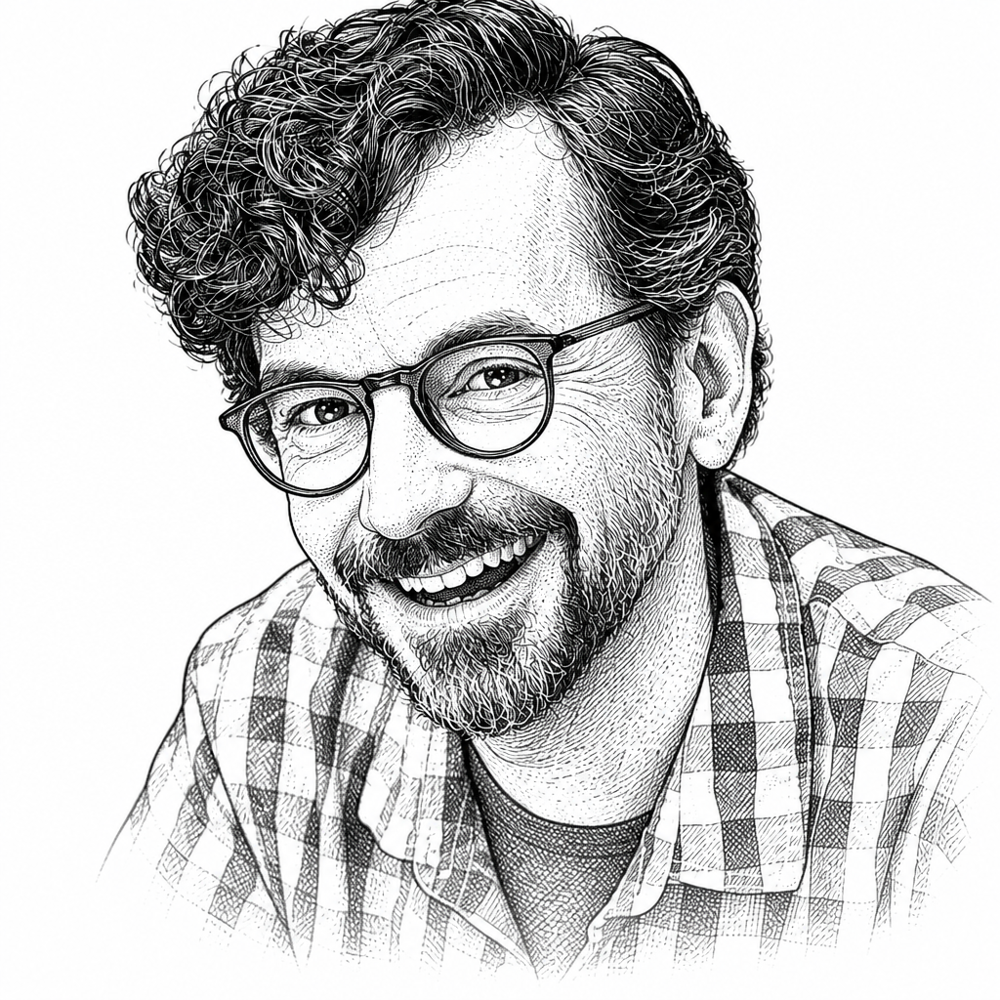
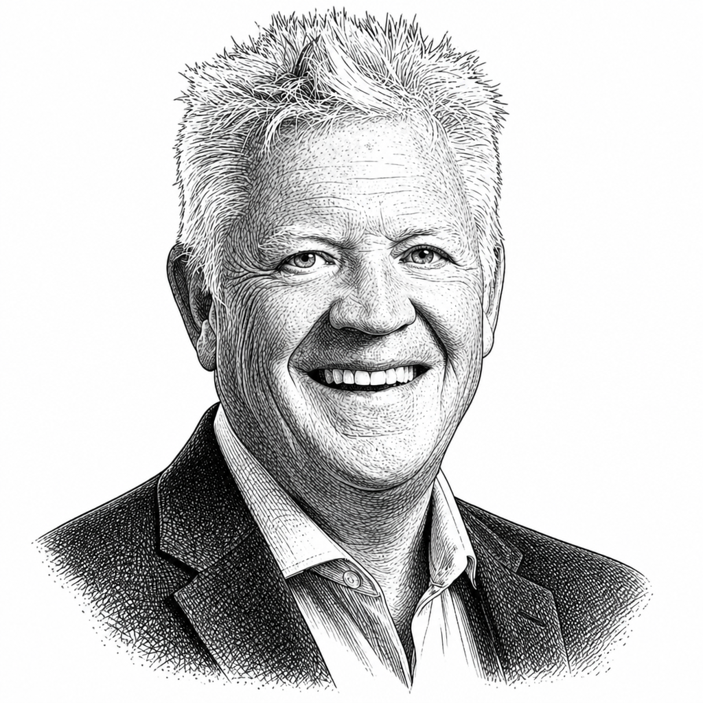

Top 3% of over 3 million podcasts globally (Listen Notes). Six years, 234 episodes, and one audience: the people who evaluate, recommend, and buy the tools architecture firms run on.
Start the conversationOne editorial platform, four ways in.
TRXL is not a show with a newsletter bolted on. It's a single, continuous body of work about technology's pressure on the architecture profession, published across four formats that feed each other.
60–90 minute conversations with the people building and buying AEC technology: CTOs, founders, design technologists, and firm leaders. Research in public, twice a month since June 2020.
Episode-linked deep dives for decision-makers who want the thinking, not just the talk. 47% open rate against a 21% industry average.
Live sessions on YouTube where makers show real workflows to a professional audience. No pitch deck. Hands-on demo. Real questions from working practitioners.
Briefings, workshops, conference sessions, and industry reports that synthesize what six years of conversations reveal about where the profession is headed.
The AEC industry isn't facing an upgrade cycle. It's facing a restructuring.
Automation is turning weeks of coordination into hours. Open SDKs are cracking vendor moats that took decades to build. AI is moving from tool to actor. The billable hour, named-user licensing, and the traditional software subscription are all in the crosshairs at once, from different directions. The firms and vendors navigating this need a trusted place to think out loud, and an audience that's already thinking about it. That's the conversation TRXL has been building since 2020.
Hosted by a licensed architect who made a career pivot into media. The expertise isn't performed, and no vendor relationship constrains the editorial choices.
Long-form conversations self-select an audience that wants substance. People who want a surface take or a sound bite can find it elsewhere; the ones who stay are the ones worth reaching.
Trust in media is built slowly and destroyed quickly. Six years of consistent publishing, no endorsements the host doesn't hold, and opinions held on camera.
When people, and the AI systems they ask, look for judgment on architecture's technology transition, they find a named, licensed architect with a six-year public record. Not an anonymous masthead.
Spinning jifto out of Henning Larsen to bring sustainability analysis into the first week of design.

Why the era of expert-only tools is ending, and what architecture looks like when software finally serves everyone.

Reclaiming construction administration: the phase where design intent is realized or negotiated away.

Designing theaters, concert halls, and opera houses around one question: does this serve the story, and the audience?
He ran CGarchitect for 21 years. What he watched happen to archviz should concern every firm waiting on AI.

Why the construction industry gets paid to stay broken, and why AI makes that unsustainable.
A narrow audience, on purpose.
Sets the firm's technology roadmap. Evaluates platforms, manages licenses, and reports ROI to partners.
I need to know what's working at other firms before I pitch it to our partners.
Owns the modeling stack and standards. Evaluates every new tool and trains project teams on adoption.
I'm the one who evaluates every new tool, and explains it to people who don't want to change.
Runs the business, leads design, and makes every technology purchase decision himself.
I wear every hat. TRXL helps me keep up with tech without hiring a consultant.
Data as of July 2026.
A category of one.
Of the handful of AEC shows in the global top 3%, TRXL is the only one built for architects. The rest of the field serves contractors, belongs to a software vendor, or covers the industry from the outside. Here's how the categories compare.
| What matters to a partner | TRXL | Construction-tech shows | Vendor-owned media | Trade press | AI-newsletter upstarts | Consultancies & platforms |
|---|---|---|---|---|---|---|
| Built for architects & design technologists | ||||||
| Editorially independent | ||||||
| Hosted by a licensed architect | ||||||
| Long-form depth (60–90 min conversations) | ||||||
| Years of consistent publishing behind it | ||||||
| A named human voice, not a masthead | ||||||
| Top-3% audio + video distribution | ||||||
| Economics that survive a vendor's budget cycle |
Assessments describe typical attributes of each category, not any specific outlet. As of July 2026.
In 2026, a global BIM software reseller ended its own podcast after six and a half years — and within about sixty days, signed a series-wide partnership with an independent show. This one.
Vendor-owned media lasts as long as one marketing budget. An independent channel persists because its economics don't depend on one. A vendor at the same global ranking as TRXL concluded that owning the channel wasn't worth it, and bought access to an independent one instead. That's not an argument. It's a receipt.
Partnership, not ad inventory.
The right partner for TRXL doesn't look like a sponsor. They look like a company that understands where the industry is going and is willing to say so out loud, next to a voice the audience already trusts.
A full long-form conversation featuring your team or your customers, produced to the same editorial standard as every other episode, and labeled as a partnership.
Season-long association with a multi-episode editorial arc. Your brand alongside a sustained argument, not a 30-second read.
A live, hands-on video deep-dive of your product in front of a professional audience. Real workflows and real questions.
Host-read placements inside episodes, for reaching the audience without a full production. Ad content has to fit the show and the audience, same as everything else.
If you're building for the people who decide what architecture firms run on, this audience is already listening. Share a few details about what you're trying to accomplish, and we'll set up a call.